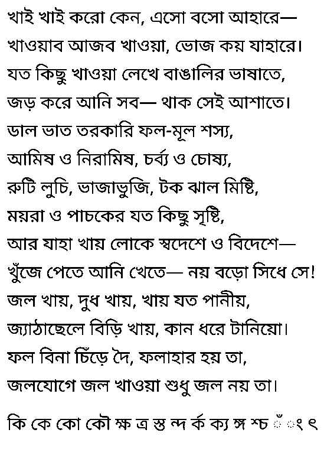

All tests
A picture of the sample, drawn with HarfBuzz and Noto Sans Bengali. Black on white.
Hard cases are the last line of the picture. A lone chandrabindu or anusvara has no consonant, so it sits on a dotted circle.
